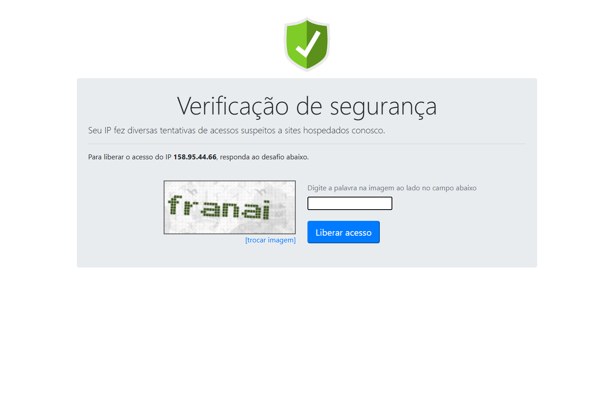

Cab453833f0 — jmsedae.com.br
https://jmsedae.com.br/
Prioridade: MEDIUM · Cenário: B_AMBIGUOUS_COMMUNICATION · Revisão humana: PENDING
1. Decisão Consolidada
Justificativa
A coleta direta por navegador foi interceptada por um desafio de CAPTCHA da hospedagem (E-FOLD, E-SHOT-VIEWPORT), mas os dados de indexação em E-DISC-001 identificam o alvo como 'JM Promotora de Vendas', um correspondente bancário que oferta financiamento e refinanciamento de veículos destacando um card específico para o Banco BV. Embora se declare correspondente bancário, omite o CNPJ e a razão social completa na página inicial, configurando comunicação ambígua e falha de transparência à luz da Resolução CMN nº 4.935/2021, o que requer revisão humana. [Revisor: CONFIRM] Embora a coleta direta tenha sido interceptada por um CAPTCHA de segurança da hospedagem (E-FOLD, E-SHOT-VIEWPORT), a evidência de descoberta (E-DISC-001) demonstra que o domínio pertence à 'JM Promotora de Vendas', que atua como correspondente bancário ofertando financiamento de veículos com card específico para o Banco BV, mas omitindo CNPJ e razão social completa na página inicial. Conforme diretrizes para promotoras e correspondentes bancários com omissão de dados regulatórios obrigatórios (Res. CMN 4.935/2021), confirma-se a classificação REVIEW_REQUIRED com prioridade MEDIUM.
Limitações
- apenas a URL descoberta foi inspecionada; páginas internas, formulários e fluxos após cliques não foram acessados
- nenhum cadastro autorizado de correspondentes carregado; CONFIRMED_COBAN indisponível nesta execução
- requisitos contratuais/internos não fornecidos: mapeamento limitado ao texto normativo
2. Screenshots


3. Catálogo de Evidências (Dados Brutos Observados)
| Ref | Tipo | Local | Conteúdo |
|---|---|---|---|
| E-URL | domain | url | URL final: https://jmsedae.com.br/ (domínio: jmsedae.com.br) |
| E-DISC-001 | text | search_index | Índice de busca (grounding): jmsedae.com.br — **Estabelecimento / Perfil:** JM Promotora (`JM Promotora de Vendas – Consultoria de Crédito Consignado e Pessoal`) | **URL:** `https://jmsedae.com.br/` | **Uso da Marca e Produtos:** Atua na captação de clientes e subcorrespondentes (*"Correspondente Bancário Autorizado"*), ofertando Consignado Público, INSS, Consignado CLT, FGTS e Crédito Veicular (financiamento, refinanciamento e empréstimo com garantia de veículo) | Destaca um card específico para o **Banco BV** (*"Referência nacional em financiamento de veículos e crédito pessoal"*) | Embora se identifique comercialmente como *"JM Promotora de Vendas"* e declare ser *"Correspondente Bancário Autorizado"*, omite o número do CNPJ e a razão social completa no texto público da página inicial |
| E-SHOT-VIEWPORT | screenshot | viewport | evidence\Cab453833f0\attempt-1\viewport.png (sha256 e70d9d3a5ac6f548…) |
| E-SHOT-FULL | screenshot | page | evidence\Cab453833f0\attempt-1\fullpage.png (sha256 e70d9d3a5ac6f548…) |
| E-TITLE | title | head | Verificação de segurança |
| E-HEAD-1 | heading | page | Verificação de segurança |
| E-FOLD | text | viewport (acima da dobra) | Verificação de segurança Seu IP fez diversas tentativas de acessos suspeitos a sites hospedados conosco. Para liberar o acesso do IP 158.95.44.66 , responda ao desafio abaixo. [trocar imagem] Digite a palavra na imagem ao lado no campo abaixo |
| E-CTA-1 | cta | page | Liberar acesso |
4. Análise de Marca (gemini-4-argon, brand-analyst/v5)
Dimensões Avaliadas
| Dimensão | Sinal | Achado | Refs |
|---|---|---|---|
| VISUAL_IDENTITY | NOT_ASSESSED | A renderização direta pelo navegador foi retida por uma página de desafio de segurança (CAPTCHA) da hospedagem, impedindo a inspeção visual direta da interface. | E-SHOT-VIEWPORT E-FOLD |
| DECLARED_COMMERCIAL_IDENTITY | CONFUSION | Identifica-se comercialmente como 'JM Promotora de Vendas – Consultoria de Crédito Consignado e Pessoal', porém não exibe CNPJ ou razão social completa na página inicial. | E-DISC-001 E-URL |
| CORRESPONDENT_TRANSPARENCY | CONFUSION | Embora declare ser 'Correspondente Bancário Autorizado' e destaque card específico para o Banco BV, omite a identificação cadastral completa (CNPJ) exigida pelas normas de transparência. | E-DISC-001 |
| INSTITUTIONAL_LANGUAGE | LEGITIMATE | Apresenta-se como promotora de vendas e consultoria de crédito multimarcas/multiprodutos, referindo-se ao Banco BV em terceira pessoa ('Referência nacional em financiamento de veículos e crédito pessoal'). | E-DISC-001 |
| LOGO_USAGE | NOT_ASSESSED | Não foi possível verificar visualmente se há uso de logotipo do Banco BV no card mencionado devido ao bloqueio por CAPTCHA na coleta direta. | E-DISC-001 E-SHOT-VIEWPORT |
| SERVICE_JOURNEY | NEUTRAL | Atua na captação de clientes e subcorrespondentes para crédito consignado, FGTS e crédito veicular (financiamento e refinanciamento). | E-DISC-001 |
| CONTACT_CHANNELS | NOT_ASSESSED | Canais de contato e eventual menção à ouvidoria não puderam ser inspecionados devido à tela de verificação de segurança. | E-FOLD |
| CONSUMER_CONFUSION | CONFUSION | A ausência de CNPJ visível combinada à oferta de produtos do Banco BV como 'Correspondente Bancário Autorizado' reduz a transparência exigida pela Resolução CMN nº 4.935/2021. | E-DISC-001 |
Indícios de Confusão
- [MEDIUM] CORRESPONDENT_TRANSPARENCY: O estabelecimento atua como promotora de crédito e correspondente bancário ofertando financiamento de veículos com destaque ao Banco BV, mas omite o número do CNPJ e a razão social completa no texto público da página inicial. — E-DISC-001
Indícios de Relação Legítima
- [MEDIUM] DECLARED_COMMERCIAL_IDENTITY: Utiliza domínio próprio (jmsedae.com.br) e identifica-se como 'JM Promotora de Vendas' e 'Correspondente Bancário Autorizado'. — E-URL E-DISC-001
Fatos Observados
- O acesso direto à URL https://jmsedae.com.br/ caiu em uma tela de 'Verificação de segurança' (CAPTCHA) do provedor de hospedagem.
- Segundo as evidências do índice de busca (E-DISC-001), o site pertence à 'JM Promotora de Vendas – Consultoria de Crédito Consignado e Pessoal'.
- A página oferta crédito consignado e crédito veicular (financiamento, refinanciamento e empréstimo com garantia de veículo) e destaca um card específico para o Banco BV.
- O estabelecimento se intitula 'Correspondente Bancário Autorizado', mas omite o número do CNPJ e a razão social completa no texto público da página inicial.
Incertezas
- A visualização direta do layout e de eventual uso do logotipo do Banco BV foi impedida pela página de verificação de segurança (CAPTCHA).
Síntese do Analista
A coleta direta por navegador foi interceptada por um desafio de CAPTCHA da hospedagem (E-FOLD, E-SHOT-VIEWPORT), mas os dados de indexação em E-DISC-001 identificam o alvo como 'JM Promotora de Vendas', um correspondente bancário que oferta financiamento e refinanciamento de veículos destacando um card específico para o Banco BV. Embora se declare correspondente bancário, omite o CNPJ e a razão social completa na página inicial, configurando comunicação ambígua e falha de transparência à luz da Resolução CMN nº 4.935/2021, o que requer revisão humana.
5. Identidade do Responsável
domain:jmsedae.com.br
Nenhum CNPJ ou razão social identificáveis no conteúdo coletado.
Fatos Observados
| Tipo | Valor | Ref | Contexto |
|---|---|---|---|
| domain | jmsedae.com.br | E-URL |
Inferências de Associação (Não são Fatos)
- entidade agrupada pelo domínio registrável; um mesmo estabelecimento pode ter outros domínios não associados
- base da associação: domínio (sem CNPJ)
6. Mapeamento de Conformidade (Hipóteses)
Mapeamento indicativo para apoio à auditoria. Não constitui conclusão regulatória; a decisão definitiva pertence à auditoria.
Res. CMN 4.935/2021, art. 14, inciso II — NO_INDICATION_OBSERVED
Fonte: NORMATIVE
Art. 14. O contrato de correspondente deve estabelecer: [...] II - vedação à utilização, pelo contratado, de logomarca ou de outros atributos que sejam similares aos adotados pela instituição contratante em suas agências, postos de atendimento, sítio eletrônico na internet, aplicativo ou outras plataformas de comunicação em rede;
Evidência observada: —
Res. CMN 4.935/2021, art. 14, inciso III, alíneas a e b — NOT_APPLICABLE_UNLESS_COBAN
Fonte: NORMATIVE
Art. 14. O contrato de correspondente deve estabelecer: [...] III - divulgação ao público, pelo contratado, de sua condição de prestador de serviços à instituição contratante, identificada pelo nome com que é conhecida no mercado, com descrição dos produtos e serviços oferecidos e canais de contato da instituição contratante, inclusive de sua ouvidoria, em local visível, em destaque e em formato legível, por meio de: a) sítio eletrônico do correspondente na internet, acessível na página inicial; b) aplicativo e outras plataformas de comunicação em rede do correspondente; [...]
Hipótese: Divulgação ao público da condição de prestador de serviços à contratante ausente, insuficiente ou sem destaque. A norma disciplina correspondentes contratados; o responsável não foi identificado como correspondente.
Evidência observada: E-DISC-001 E-URL
Informação faltante:
- confirmar se o responsável é correspondente contratado (relação pública da contratante — art. 21 — ou base interna)
- canais de contato/ouvidoria da contratante não observados no material coletado (podem existir em páginas não inspecionadas)
Res. CMN 4.935/2021, art. 3º — NO_INDICATION_OBSERVED
Fonte: NORMATIVE
Art. 3º O correspondente atua por conta e sob as diretrizes da instituição contratante, que assume inteira responsabilidade pelo atendimento prestado aos clientes e usuários por meio do contratado.
Evidência observada: —
Se o responsável não for correspondente contratado, os indícios podem caracterizar uso indevido de marca ou fraude, fora do escopo da Res. 4.935: avaliar encaminhamento às áreas jurídica/segurança.
Limitações: requisitos contratuais/internos não fornecidos: mapeamento limitado ao texto normativo
7. Revisão Crítica (gemini-4-argon)
Decisão: CONFIRM → REVIEW_REQUIRED / MEDIUM
Embora a coleta direta tenha sido interceptada por um CAPTCHA de segurança da hospedagem (E-FOLD, E-SHOT-VIEWPORT), a evidência de descoberta (E-DISC-001) demonstra que o domínio pertence à 'JM Promotora de Vendas', que atua como correspondente bancário ofertando financiamento de veículos com card específico para o Banco BV, mas omitindo CNPJ e razão social completa na página inicial. Conforme diretrizes para promotoras e correspondentes bancários com omissão de dados regulatórios obrigatórios (Res. CMN 4.935/2021), confirma-se a classificação REVIEW_REQUIRED com prioridade MEDIUM.
| Tema | Severidade | Questionamento | Refs |
|---|---|---|---|
| Bloqueio por CAPTCHA na coleta direta | LOW | A visualização direta do conteúdo da página foi impedida por um desafio de segurança da hospedagem (E-FOLD, E-SHOT-VIEWPORT), de modo que a análise apoia-se exclusivamente nos dados do índice de busca (E-DISC-001). | E-FOLD E-SHOT-VIEWPORT E-DISC-001 |
| domain_attribution | MEDIUM | Responsável pela página não identificado; a conclusão sobre a marca não pode ser atribuída a um estabelecimento específico. | E-URL |
8. Origem da Descoberta
| Fonte | Consulta / hipótese | URL original | Título / trecho |
|---|---|---|---|
| grounding | Objetivo: Promotoras e correspondentes oferecendo refinanciamento, crédito com garantia, consignado e home equity.
Execute no Google Search as seguintes consultas (dorks):
- "Banco BV" ("crédito com garantia" OR "home equity" OR refinanciamento) (correspondente OR promotora) -site:bv.com.br -site:bancobv.com.br -site:bvfinanceira.com.br -site:bvinvestimentos.com.br -site:napista.com.br -site:bvopen.com.br -site:meufinanciamentosolar.com.br -site:votorantim.com.br -site:vam.com.br -site:reclameaqui.com.br -site:jusbrasil.com.br -site:jus.br -site:weebly.com -site:site123.me
- "Banco BV" (consignado OR "empréstimo") promotora ("correspondente bancário" OR correspondente) -site:bv.com.br -site:bancobv.com.br -site:bvfinanceira.com.br -site:bvinvestimentos.com.br -site:napista.com.br -site:bvopen.com.br -site:meufinanciamentosolar.com.br -site:votorantim.com.br -site:vam.com.br -site:reclameaqui.com.br -site:jusbrasil.com.br -site:jus.br -site:weebly.com -site:site123.me
Liste de forma abrangente as páginas públicas encontradas (até 12 resultados distintos), informando para cada uma o nome do estabelecimento/perfil, a URL e como a marca é utilizada (destaque visual, título, feirão, simulador, redes sociais e se há ou não identificação clara de CNPJ e condição de correspondente bancário). H2-product:refinanciamento e crédito com garantia | https://jmsedae.com.br/ | jmsedae.com.br **Estabelecimento / Perfil:** JM Promotora (`JM Promotora de Vendas – Consultoria de Crédito Consignado e Pessoal`) | **URL:** `https://jmsedae.com.br/` | **Uso da Marca e Produtos:** Atua na captação de clientes e subcorrespondentes (*"Correspondente Bancário Autorizado"*), ofertando Consignado Público, INSS, Consignado CLT, FGTS e Crédito Veicular (financiamento, refinanciamento e empréstimo com garantia de veículo) | Destaca um card específico para o **Banco BV** (*"Referência nacional em financiamento de veículos e crédito pessoal"*) | Embora se identifique comercialmente como *"JM Promotora de Vendas"* e declare ser *"Correspondente Bancário Autorizado"*, omite o número do CNPJ e a razão social completa no texto público da página inicial |
9. Cadeia de Custódia da Coleta
sha256 b7fc36bbe9642e1928fcf17792e36e8a6766e38c14bbf8f4aec39e0f5855c86d
Original: https://jmsedae.com.br/
Final: https://jmsedae.com.br/
| Artefato | Caminho | SHA-256 | Bytes |
|---|---|---|---|
| screenshot_viewport | evidence\Cab453833f0\attempt-1\viewport.png | e70d9d3a5ac6f5489148ec003e1791b952b97740a6f01a81f2740b02e14141ca | 82090 |
| screenshot_full | evidence\Cab453833f0\attempt-1\fullpage.png | e70d9d3a5ac6f5489148ec003e1791b952b97740a6f01a81f2740b02e14141ca | 82090 |
| html | evidence\Cab453833f0\attempt-1\page.html.txt | f43b003faa3165e845a166914a3bb38cba22ec2ef3bb2371f4caadcac9fd8609 | 15444 |
| text | evidence\Cab453833f0\attempt-1\text.txt | 0a5f2c711d2080ac023163f2a196e8863a3f5a65acfc7463411fd9b4914c875b | 253 |
| page_data | evidence\Cab453833f0\attempt-1\page.json | 682321f0666e52587f713312f919a787207946055924e99cb9ffca9e52d86314 | 1987 |
Ocorrências e conteúdo não inspecionado
- apenas a URL descoberta foi inspecionada; páginas internas, formulários e fluxos após cliques não foram acessados
10. Histórico de Estados
| Quando | De | Para | Nota |
|---|---|---|---|
| 2026-11-23T14:17:57+00:00 | DISCOVERED | QUEUED | prioritised (score 4.0) |
| 2026-11-23T14:21:03+00:00 | QUEUED | COLLECTING | |
| 2026-11-23T14:21:57+00:00 | COLLECTING | COLLECTED | |
| 2026-11-23T14:21:57+00:00 | COLLECTED | ANALYZING | |
| 2026-11-23T14:22:24+00:00 | ANALYZING | REVIEWING | |
| 2026-11-23T14:22:33+00:00 | REVIEWING | COMPLETED |